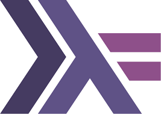

Haskell
Get serious about functional programming!

Table of Contents
Haskell is a functional programming language.
It's primary characteristics are that it:
- is purely functional, not supporting
procedural or object-oriented programming
- supports first-class functions that can be
passed to and returned from other functions
- only supports immutable data (cannot be modified)
- strictly separates impure functions (those with side effects)
from pure functions
- is statically typed with type inference
- is lazy meaning that expressions are not evaluated
until their value is needed
- has no "for" or "while" loops;
instead iteration is performed with recursion and functions like
map, filter, and foldl
- has a powerful type system
- uses persistent data structures to efficiently
create modified copies of existing data structures
- addresses
Concurrency
and
parallelism
TODO: Get more from Wikipedia page!
This article is targeted at software developers that
have not yet been exposed to the Haskell programming language
and want to quickly learn why so many developers love it.
The goal is to provide something that is more detailed than
a cheatsheet and less detailed than a book.
There are many reasons to learn Haskell including:
- It can be fun and challenging to learn a new programming language.
- It's good learn about the functional style of programming
if you have only primarily used procedural or object-oriented programming.
- Learning Haskell will give you a greater appreciation of types.
- Haskell inspired the design of the Elm programming language,
so learning Haskell is a step toward learning Elm.
- PureScript can be used to compile most Haskell code to JavaScript,
so it can be used to develop Node apps and web apps.
- It may cause you to thinking about programming in other languages in a new, better way.
- You may actually decide to write an appliation in Haskell.
- And finally, you may decide you do not like Haskell.
That's fine, but you'll want to be able to explain why
and that requires learning some things about the language.
There are many resources for learning Haskell.
Many of them are much longer and more technical that this article.
I suggest starting here and then moving on to the following resources:
The Haskell programming language was named after
the American mathmatician Dr. Haskell Brooks Curry (1900-1982).
He was a Harvard graduate, known for his work in combinatory logic.
Dr. Curry taught at Harvard, Princeton, Penn State,
and the University of Amsterdam.
Interestingly there are three programming languages named after him,
Haskell, Brook, and Curry.
Of the three, Haskell is by far the most popular.
Work on Haskell started in 1987.
It was designed by a committee that at various times included
Simon Peyton Jones, Erik Meijer, and Philip Wadler.
Haskell was first released in 1990.
The language was standardized in 1999 as "Haskell 98",
and revised in 2003.
The current version of the standard, released in 2010,
is called "Haskell 2010". Among other things this added
the LANGUAGE pragma and
a foreign function interface (FFI) for calling C code
A committee of about 20 members is working on the next version,
"Haskell 2020".
There are many Haskell compilers that produce executables from Haskell source code.
The most popular is the Glasgow Haskell Compiler
(
GHC).
Other include the Utrecht Haskell Compiler
(
UHC)
and the LLVM Haskell Compiler
(
LHC)
which is included with GHC.
There are also dialects of Haskell that include:
- Disciple
http://disciple.ouroborus.net/
"an experimental dialect of Haskell which investigates static typing
and program transformation in the presence of computational effects."
- Frege
https://github.com/Frege/frege
"a Haskell for the JVM"
- PureScript
http://www.purescript.org/
"a strongly-typed functional programming language
that compiles to JavaScript"
- Eta
http://eta-lang.org/
"A simple & powerful language for
building scalable systems on the JVM"
"It brings two big ecosystems i.e., Java and Haskell together.
This means that you can reuse Java and Haskell libraries
in Eta projects."
One complaint about GHC is that it has cryptic error messages.
Another is that it produces executables that are larger
than those produces by compilers for other languages
for similar applications.
Instructions for installing the GHC compiler are at
http://hackage.haskell.org/platform/.
There are two options for installing in macOS.
You can download .dmg file and double-click it.
You can also use Homebrew and run
brew cask install haskell-platform.
I highly recommend installing GHC now
so you can try each code example in this article.
GHC comes with a "read-evaluate-print-loop" (REPL) tool called ghci
for experimenting with Haskell code.
It's a great tool, especially when just getting started with Haskell.
To start it, enter gchi.
To get help on commands, enter :help or :?.
To exit, press ctrl-d or enter :quit.
Previously entered commands can be recalled using the up and down arrow keys.
The default prompt is Prelude>.
This is the name of the standard library that is automatically loaded.
To change the prompt within the current session, enter
:set prompt "new prompt".
To make this a permanent change that is used in all future ghci sessions,
add that command to the file ~/.ghci.
Mine uses an elephant emoji for the elephant on the
cover of the book "Learn You a Haskell for Great Good!".
To enable Vim keybindings inside ghci,
create the file ~/.haskeline
and add the command editMode: Vi to it.
When Haskell expressions are entered in ghci,
they are evaluated the their value is printed
by calling show on it which
converts many kinds of values to a string representation.
Besides entering Haskell expressions,
there are many commands that can be entered,
all preceded by a colon.
The most useful of these include:
:browse module-name lists the exported functions:edit edits the last module loaded with the default editor
(automatically reloads file after editor exits):edit file-path edits the specified file with the default editor:help or :? outputs ghci help:info fn-name outputs information about a function:load file-path loads a module definition and all modules it imports:main args runs the main function:quit exits ghci; can also press ctrl-d:script file-path runs a script which is a file containing Haskell expressions
rather than a module definition as is loaded with the :load command:type name outputs the type of a name:reload reloads the last loaded file:set +t turns on automatically outputting the type of all expressions entered:unset +t turns off automatically outputting types:show modules lists all modules that have been imported:!command runs a shell command; For example, :!clear clears the screen.
Many commands can be abbreviated to a colon followed by the first letter.
These include :edit, :help, :info,
:load, :quit, :reload, and :type.
ghci has a builtin debugger supported by many colon commands.
Enter :help to see a list of them.
All functions defined in the Prelude module are available by default in ghci.
To use functions in other modules, import them by entering
import module-name.
Inside ghci, to see all the functions defined in a module,
enter the module name followed by a period and press tab for completion.
For example, enter import Data.Map,
enter Data.Map., and press tab.
- create a .hs file with a "main" function
- ghc {name}.hs
* produces two intermediate files
* .hi is an interface file
- a binary file containing:
* details about the compilation including the GHC version
* list of exports including their types, arity, and strictness
- can be viewed with
ghc --show-iface name.hi
* .o is an object file
- a binary file containing compiled code
- run with ./name
- example
* in file greet.hs
import System.IO
main = do
-- lines inside do must have the same indentation
putStrLn "Enter your name."
name <- getLine
putStrLn ("Hello, " ++ name ++ "!")
* ghc greet
* ./greet
- example that uses a command-line argument
* see fact.hs in your Haskell directory
"Stack is a cross-platform program for developing Haskell projects."
The primary website for this tool is
https://docs.haskellstack.org/.
Stack provides many capabilities beyond an older Haskell build tool
called "Cabal" which it uses.
It also uses GHC.
Stack can:
- generate a scaffold (initial directories and files) for a new project
- manage package dependencies
- build an application
- run tests
- report code coverage
- and more?
To install Stack on a *nix system, enter
curl -sSL https://get.haskellstack.org/ | sh.
To install on a Mac, install Homebrew and enter brew install haskell-stack.
To install in windows, download an installer from the Stack website.
To upgrade the version that is installed, enter stack upgrade.
To create a new project enter
stack new project-name.
This creates a directory with the same name as the project
containing many files that provide scaffolding for an application.
Change to this directory before executing other stack commands.
The file app/Main.hs imports src/Lib.hs
which defines the function someFunc
and it calls that function.
The file test/Spec.hs provides a starting point
for implementing unit tests.
The file package.yaml describes the project
and its dependencies.
For those familiar with Node.js, this file is very similar
to package.json files.
To download and install GHC inside the project
enter stack setup.
This allows each project to use a different version of GHC.
To build the project enter stack build.
This creates an executable below the .stack-work directory.
It doesn't do anything if no source files required to build the executable
have been modified since the last build.
To run the project enter stack exec project-name-exe.
For a new project this will simply output "someFunc".
If you would rather not have "-exe" at the end of the executable name,
edit package.yaml and remove -exe
from the name of the first child under executables:.
To install the project enter stack install.
This creates an executable in the directory $HOME/.local/bin.
Add this directory to the PATH environment variable to enable
running installed applications by simplying entering the project name.
Stack uses GHC to create executables.
By default it does not use the -dynamic option.
This results in very large executables.
The scaffold application executable is just over one megabyte.
To get stack to run GHC with the -dynamic option,
edit package and add it under the path
executables...project-name-exe...ghc-options.
The size of the scaffold application executable
is reduced to under 13K with this option (1.2%)!
To run the project tests enter
stack test.
This does not use a specific test framework.
Any can be used. A popular choice is
hspec.
See the hspec section later.
To start a REPL enter stack ghci
or stack repl which is an alias.
You will likely use this often, so consider creating
an alias for this command with a short name
like "hr" for "Haskell REPL".
To delete all generated files, including executables
created by the stack build command,
enter stack clean.
This deletes some files under the .stack-work directory,
but you can also just delete that entire directory.
The .stack-work directory is listed
in the generated .gitignore file.
To list the project dependencies enter stack list-dependencies.
To perform an API search using Hoogle,
enter stack list-dependencies.
The first time this is used it will install over 100 libraries
and run for almost ten minutes!
It is much faster after that.
For example, to find functions that have the word "sort" in their name,
enter stack hoogle sort.
To find functions that take a list and return a boolean value,
enter stack hoogle "[a] -> Bool".
To install a package, enter stack install package-name.
This does not add a dependency to the package.yaml file.
To see all the stack options and commands, enter stack.
Commonly used stack commands not already covered include:
TODO: List any more?
Stack has templates for generating many other files.
To see a list of these enter stack templates.
Some of the more useful templates include:
stack ghcjs - compiles Haskell code to JavaScriptstack hspec - does something with testsstack scotty-hello-world - does something with REST services?stack spock - does something with this web frameworkstack yesod-mysql - does something with this web framework
A Haskell "library" is a collection of modules.
A Haskell "module" is a source file that typically
defines functions, type classes, and types.
Some popular Haskell libraries include:
- scotty for implementing REST services
- aeson for working with JSON
- ? for working with MySQL
- ? for working with Postgresql
- array
- base
- binary
- bytestring
- containers
- deepseq
- directory
- filepath
- ghc
- ghc-boot
- ghc-compact
- ghc-prim
- hoopl
- hpc
- integer-gmp
- process
- template-haskell
- time
- unix
- Win32
Library installing tools for Haskell include:
- Cabal at
https://www.haskell.org/cabal/
"is a system for building and packaging Haskell libraries and programs"
- hpack at ?
for managing dependencies in a
project-name.cabal file.
- Stack at
https://haskellstack.org
"is a cross-platform program for developing Haskell projects"
This uses Cabal.
To install in Linux and macOS, enter
curl -sSL https://get.haskellstack.org/ | sh.
To install other Haskell-related tools using stack, enter
stack install ghc-mod hlint hdevtools hfmt.
Editor plugins for Haskell include:
- ALE for Vim at
https://github.com/w0rp/ale
provides automatic linting of Haskell code using
HLint.
See http://monicalent.com/blog/2017/11/19/haskell-in-vim/!
Install the Vim plugin vimproc from
https://github.com/Shougo/vimproc.vim.
cd to the vimproc directory and run "make".
Install the Vim plugin ghcmod-vim from
https://github.com/eagletmt/ghcmod-vim.
Add these lines to .vimrc:
nnoremap <Leader>ht :GhcModType<cr>
nnoremap <Leader>htc :GhcModTypeClear<cr>
Press ,ht to see type of name under cursor.
Press ,htc to clear type display.
Press ,? to show the error message in the status line
in a multi-line buffer so it is easier to read long messages.
Other commands include
:GhcModCheck displays messages in quickfix window.
:GhcModLint displays messages in quickfix window.
:GhcModCheckAsync, :GhcModLintAsync, :GhcModCheckAndLintAsync
and more described at https://github.com/eagletmt/ghcmod-vim.
Code formatting tools for Haskell include:
Linting tools for Haskell include:
- hlint
Install this using stack.
To lint a file, enter hlint filepath.
Testing tools for Haskell include:
hspec
To use hspec in a project created with stack,
edit package.yaml and add a line containing "- hspec"
below tests...project-name-test...dependencies.
Here is a simple example of an hspec test
in the file test/Spec.hs:
module Main where
import Lib -- exports the function double
import Test.Hspec
main :: IO ()
main = hspec $
describe "my suite" $ do
it "can add" $ do
(0 + 0) `shouldBe` 0
(0 + 1) `shouldBe` 1
(1 + 2) `shouldBe` 3
it "can subtract" $ (3 - 1) `shouldBe` 2
it "double" $ double 3 `shouldBe` 6
To run the tests, enter stack test.
During development tests typically need to be run repeatedly.
The best way to do this is to
load them into ghci (ex. stack ghci test/Spec.hs)
and use the :reload and :main commands to reload and rerun them.
SourceFiles
Haskell source files have a file extension of .hs.
To load these into a ghci session, enter
:load filename or :l filename.
The .hs file extension can be omitted.
If a loaded source file is modified, enter
:reload or :r to reload it in ghci.
Note that these source files must define a valid Haskell module.
They are not merely a series of expressions to be evaluated by ghci.
To make it easy to demonstrate
use of functions defined in the module,
consider defining a function with a name like "demo"
that can be called from ghci.
Is it fair to say that ghci always evaluates expressions
in a monadic context, so "do" is not needed?
To execute a Haskell source file without saving intermediate files
or an executable, enter runghc filename.
The .hs file extension can be omitted.
Note that runhaskell is an alias (symbolic link)
for runghc.
For example, create file hello.hs
containing this function definition:
hello name = "Hello, " ++ name + "!"
To run this inside the GHC REPL,
enter ghci,
:l hello, and
hello "Mark".
Functions can call other functions defined later in a source file.
- variable identifiers start with a lowercase letter
- constructor identifiers with an uppercase letter
- both can contain underscores, single quotes, letters and digits
- operators are formed from one or more of '!#$%&*+./<=>?@\^|-~'
- constructors can be operator names, if they start with a ':'
- ex. :+ for Data.Complex
There are essential four categories of primitives in Haskell.
They are booleans, characters, strings, and numbers.
These are supported by the types Bool,
Char, String, and
several numeric types defined in the Prelude module.
Booleans are represented by the type Bool.
The only valid values are True and False.
Single Unicode characters are represented by the type Char.
Literal values are surrounded by single quotes.
Strings are represented by the type String
which is a alias for the type [Char].
Literal values are surrounded by double quotes.
Strings are actually Lists of Char values,
so they can be passed to any function that accepts a list
where the element type is allowed to be Char.
Numbers are represented by many types.
The Int type represents integers in four bytes.
The Integer type represents arbirtrary precision integers.
The Float type represents floating point numbers in four byte.
The Double type represents floating point numbers in eight bytes.
The Rational type represents ?.
The Word type represents ?.
Many type classes describe the functions supported by numeric types.
These include:
Num
Real
Integral
Floating
RealFrac
RealFloat
* Num
- for types that can be used as numbers
- builtin types that implement this are
Int, Integer, Float, and Double
- when a function type signature says that
two or more parameters have a type of Num,
those must have the same actual type
* ex. add :: (Num a) => a -> a -> a
add a b = a + b
n = 3 :: Int
add n 7.2 -- error because n and 7.2 are not the same type
* Floating
- the Float and Double types implement this
- some math functions take arguments of this type (ex. sqrt and sin)
- ex.
n = 3 :: Int
sqrt n -- error because n is not Floating
* Integral
- the Int and Integer types implement this
- fromIntegral function takes an Integral and converts it to Num
* needed in order to call a function like + on an Integral and a Floating
* ex. length [1,2,3] + 2.1 raises an error because
length returns an Int and 2.1 is not an Int
The functions defined in the Prelude module
that operate on numbers include
even, odd, gcd, lcm, ^, ^^, fromIntegral, and realToFrac.
Negative numbers must be surrounded by parentheses to
indicate that the dash is not the subtraction operator.
For example, 5 - (-2) == 7.
The number types exist in a type hierarchy shown in the following diagram.

* Num
* Fractional
* Floating
* Float
* Double
* RealFrac
* Float
* Double
* Real derives from Ord which adds ordering functions
* Integral derives from Enum
* Int
* Integer
* RealFrac
* Float
* Double
* RealFloat derives from RealFrac and Floating
* Float
* Double
* Complex
Say something about the Unit () type.
Haskell type declarations use the Hindley-Milner type system.
The syntax is name :: type
where :: means "has type of".
- variable examples
* firstName :: String
* names :: [String]
- an array of Strings
- function examples
* add :: Int -> Int -> Int
add x y = x + y
- each parameter type is followed by ->
with the return type at the end
- takes two Ints and returns an Int
- also takes one Int and returns a
function that takes and Int and returns an Int
* type variables can be used to specify that
an argument type or the return type can be
any type or a type that derives from a specific type class
- ex. the swap function below takes any kind of list
and returns a new list where the first two items are swapped
swap :: [a] -> [a]
swap (first:second:rest) = second:first:rest
swap [1,2,3,4] == [2,1,3,4]
* to restrict a type variable to types that
derive from a given type class (not an actual type!)
swap :: Num n => [n] -> [n]
swap (first:second:rest) = second:first:rest
swap [1,2,3,4] == [2,1,3,4]
* add :: Num a => a -> a -> a -- syntax only works with type classes
- means all occurrences of a in the signature have type Num
- takes two Num arguments and returns a Num
- "a" here is called a "type alias"
- => and the part to its left is called a "class constraint"
* if more than one, surround with parens and separate with commas
* ex. (Num a, String b) =>
- can require a type variable to derive from more than one type class
* ex. (Eq a, Ord a) =>
* add x y = x + y
- implementation of the two function declarations
* ghci detail
- entering the type signature and definition on two lines doesn't work
- workarounds
* enter them on same line separated by a semicolon
- ex. let add :: Num a => a -> a -> a; add x y = x + y
* enter them in a block
:{
let add :: Num a => a -> a -> a
add x y = x + y -- indented 4 spaces
:}
* turn on multline mode which automatically infers use of :{ and :}
:set +m -- one tie
let add :: Num a => a -> a -> a
add x y = x + y -- indented 4 spaces
press return to exit block
- another function example
* charAt :: String -> Int -> Char
charAt str index = str !! index
- can see the type of a function in ghci with :t {function-name}
Are these predefined type classes?
- Data?
- Bits?, FiniteBits?
- Generic?
- Storable?
Type classes define a set of functions that must be implemented
for types that are instances of the type class.
- not like classes in OO languages
- define an interface (set of functions)
- names start uppercase
- types that are instances implement all the functions
and are said to "derive" from the type class
- a type can derive from any number of type classes
- builtin examples include
The Prelude module defines the type classes
described in the table below
(duplicated in the Deriving section):
Prelude Type Classes
| Type Class Name |
Type Constructors |
Description |
Example |
| Bounded |
|
- for types that have bounds
- functions are minBound and maxBound
- called on the type, not a value of the type
* ex. maxBound :: Int
- examples of builtin types that implement this are
Char, Int, Float, and Double
|
|
| Eq |
|
- for types whose values can be compared for equality
- functions are = and /=
- all standard Haskell classes implement this
|
|
| Ord/td>
| |
- for types whose values can be ordered
- functions are <, <=, >=, and >
|
|
| Ordering |
EQ, LT, and GT |
used by the compare function
in the Ord type class |
compare 1 2 == LT |
| Enum |
|
- for types with values that can be enumerated
and used in ranges to create Lists
- functions are succ and pred
- examples of builtin types that implement this are
Int, Integer, Float, and Double
|
|
| Read |
|
parses a string to create a value
- opposite of Show
* a little like JavaScript's JSON.parse
- only function is read
- when desired type is not known from context, must specify
* ex. read "3.14" raises an exception
* ex. read "3.14" :: Float
* ex. read "[1, 2, 3]" :: [Int]
* ex. read "(\"foo\", 7, True)" :: (String, Int, Bool)
|
|
| Show |
|
creates a string representation of a value
- only function is show
* a little like JavaScript's JSON.stringify
- ex. show 3.14
- ex. show [1, 2, 3]
- ex. show ("foo", 7, True)
|
|
- parameterized type definitions that can be passed many types (polymorphic)
- pass types to a type constructor of a type class or a to create a new type
- pass values to a data constructor to create an instance of a type
Type Variables
- allow a parameter or return type to be more than one type
* ex. the head function works on lists of *any* type
- its signature is head :: [a] -> a
where a represents any type
* ex. myFn :: Num n => n -> n
- n can be any type that derives from Num
- the part after :: up to and including =>
is called a "type constraint"
* ex. myFn :: (Read r, Show s) => r -> s
- a contrived example; maybe there's a better one
- r can be any type that derives from Read and
s can be any type that derives from Show
- all type classes and types start uppercase
and all type variables start lowercase
* typically type variable names are a single character
- similar to generics in other languages such as Java and Flow/TypeScript
- functions whose signatures use type variables
are called "polymorphic functions"
ShapeCompare example:
data Shape =
Circle {
centerX :: Float,
centerY :: Float,
radius :: Float
} |
Rectangle {
x1 :: Float,
y1 :: Float,
x2 :: Float,
y2 :: Float
}
area :: Shape -> Float
area (Circle _ _ radius) = pi * radius ^ 2
area (Rectangle x1 y1 x2 y2) = (abs (x1 - x2)) * (abs (y1 - y2))
circle = Circle 1 2 3
rectangle = Rectangle 2 2 6 5
area circle == 28.27
area rectangle == 12.0
-- function that computes the width of a shape
width :: Shape -> Float
-- Circle version
width (Circle _ _ radius) = radius * 2
-- Rectangle version
width (Rectangle x1 _ x2 _) = abs (x1 - x2)
-- function that computes the height of a circle
height :: Shape -> Float
-- Circle version
height (Circle _ _ radius) = radius * 2
-- Rectangle version
height (Rectangle _ y1 _ y2) = abs (y1 - y2)
-- custom type class
class ShapeCompare kind where
isLarger :: kind -> kind -> Bool
isWider :: kind -> kind -> Bool
isTaller :: kind -> kind -> Bool
-- implementation of ShapeCompare for Shape type
-- Note that the name of the type class being implemented
-- is followed by the name of the type for which it is being implemented.
-- We could implement the same type class for many types.
instance ShapeCompare Shape where
isLarger shape1 shape2 = area shape1 > area shape2
isWider shape1 shape2 = width shape1 > width shape2
isTaller shape1 shape2 = height shape1 > height shape2
-- isLarger circle rectangle == False
-- isWider circle rectangle == False
-- isTaller circle rectangle == True
The deriving keyword specifies that a
type derives from any of seven provided type classes.
A comma-separated list of type classes surrounded by
parentheses follows the deriving keyword.
The parentheses can be omitted when
only deriving from one type class.
It automatically implements them for you.
These type classes are described in the following table
(duplicated in the Type Classes section):
| Type Class Name |
Functions |
Description |
| Eq |
|
|
| Ord |
|
|
| Enum |
|
|
| Read |
|
|
| Show |
|
|
| Bounded |
|
|
| Ix |
|
|
It is possible to override the function definitions
provided by Haskell. For example:
data Size = S | M | L -- cannot say "deriving Show" since overridden below
instance Show Size where
show S = "small"
show M = "medium"
show L = "large"
show S == "small"
size = M
show size == "medium"
| Symbol |
Meaning |
| -- |
start of comment line |
{- |
start of multi-line comment |
-} |
end of multi-line comment |
+ |
add |
- |
subtract/negate |
* |
multiply |
/ |
division and substitution (as in e{f/x}) |
^ |
Num exponentiation |
^^ |
Fractional exponentiation |
** |
Float (and Double?) exponentiation (ex. 2 ** 3 == 8) |
&& |
and |
|| |
or |
< |
less than |
<= |
less than or equal |
== |
equal operator |
/= |
not equal |
>= |
greater than or equal |
> |
greater than |
\ |
beginning of lambda function |
. |
function composition; name qualifier |
| |
guard and case specifier; list comprehension separator; data definition alternative (enum type) |
++ |
list concatenation |
: |
cons (appends head) |
!! |
Indexing |
.. |
range-specifier for lists |
\\ |
list difference |
<- |
list comprehension generator; single assignment in do |
; |
definition separator |
-> |
function type-mapping; lambda definition; case separator |
= |
type or value naming |
:: |
type specification (has type) |
=> |
context inheritance from class |
() |
unit, the empty value in IO () type |
>> |
then, monad sequencing |
>>= |
monad sequencing with value passing |
>@> |
object composition for monads |
(..) |
export constructor (postfix) |
[ and ] |
list constructors using , as separator |
( and ) |
tuple constructors using , as separator; using infix operator as prefix |
` |
surround prefix operator to use as infix |
' |
surround literal character |
" |
surround literal string |
_ |
Wildcard in pattern matching |
~ |
irrefutable pattern |
! |
force evaluation (strictness flag) |
@ |
"Read As" in pattern matching |
$ |
evaluates expression on right and passes result to function on left |
What are viewed as operators in other programming languages
are actually infix functions in Haskell.
Parentheses can be used to control order of evaluation.
The tables below summarize the provided
functions for operation on primitive types
like numbers and booleans.
Number Functions
| Name |
Operation |
Example |
| div | integer division, discarding remainder | div 8 3 == 2 |
| mod | modulo | mod 8 3 == 2 |
| gcd | greatest common denominator | gcd 12 15 == 3 |
| lcm | least common multiple | lcm 6 10 == 30 |
| even | determines if a number is even | |
| odd | determines if a number is odd | |
| abs | returns the absolute value of a number | |
Logic Functions
| Name |
Operation |
| && | and |
| || | or |
| not | not |
These comparison functions required their operands
to be the same type.
Comparison Functions
| Name |
Operation |
| == | equal |
| /= | not equal |
| < | less than |
| <= | less than or equal |
| > | greater than |
| >= | greater than or equal |
$ precedence operator
- means expression after it takes precedence over expression before it
- ex. abs (x1 - x2) == abs $ x1 - x2
- Most people don't like this at first.
You may think that it adds new syntax for no real gain.
You may think you'll always use parens instead.
You will probably cave in a use it later.
- another example
putStrLn ("Hello, " ++ name)
is the same as
putStrLn $ "Hello, " ++ name
. precedence operator
- evaluates expression on right and passes it to function left
- need a good example
See the infix, infixl, and infixr keywords.
The ghci REPL supports assigning values to variables with
name = expression.
However, this is only supported in ghci.
In normal Haskell code, the let and where keywords
are used to assign value to variables and
then use those variables in a expression.
The syntax to set a variable to the value of an expression
and specify its type is:
name = expression :: type
For example, n = 3 :: Int.
All data in Haskell is immutable, meaning it cannot be modified.
This means that variables are really constants.
Values can be assigned to multiple variables in a single assignment.
This is similar to destructuring in JavaScript.
The syntax is for doing this is:
(name1, name2) = (value1, value2)
Is it correct to say that a variable is really a function
that always returns the same value?
- syntax to call
* name arguments
* arguments are separated by spaces
* to use the result of another function as an argument
surround the call with parens
- ex. max (min 2 3) (min 5 4) == 4
- syntax to define
* name parameters = expression
* parameters are separated by spaces
* if the name consists of letters, the function is prefix
- if the function has two parameters,
surround with backticks to use as infix
- ex. 8 `div` 3 == 2
* if the name consists of only symbols, the function is infix
- if the function has two parameters,
surround with parens to use as prefix
- ex. (*) 2 3 == 6
- to pass an infix function as an argument to another function
surround with parens
* can also use parens to create a curried version
to pass to another function
- ex. map (* 2) someList
- defaults to prefix
- can you specify that a function is infix?
- name cannot begin with an uppercase letter
- most functions are prefix functions,
but some are infix functions
- to call a prefix function,
start with the name followed by arguments
all separated by spaces (no parens)
- all functions return a value
- prefix functions are evaluated before infix functions,
so parens are needed in succ (2 * 3) which returns 7
* succ 2 * 3 returns 9
Pure functions are ...
Impure functions ...
Examples of side effects include I/O, error handling,
and modifying global state.
Other functions provided by Prelude include:
* $
* $!
* asTypeOf
* const
* error
* errorWithoutStackTrace
* flip
* id
* seq
* undefined
* until
Haskell functions automatically support currying.
If a function is called with fewer arguments than allowed,
a new function is returned that accepts the remaining arguments.
For example,
add :: Int -> Int -> Int
add x y = x + y
plus5 = add 5
plus5 2 == 7
volume :: Num n => n -> n -> n -> n
volume w h d = w * h * d
v2 :: Num n => n -> n -> n
v2 = volume 2
v3 :: Num n => n -> n
v3 = volume 2 3
volume 2 3 4 == 24
v2 4 == 24
v3 3 4 == 24
A recursive function is a function calls itself,
either directory or in another function that it calls.
- factorial with pattern matching and recursion
fac :: Int -> Int
fac 0 = 1
fac n = n * fac (n - 1)
fac 4 -- 24
- factorial without recursion
fac2 :: Int -> Int
fac2 n = product [1..n]
The "dot" operator composes two single-argument functions.
This character was chosen because it is the closest
easily typeable character to ○ which is the symbol
used for function composition in mathematics.
It creates a new function that
calls the right function with its argument and
then calls the left function with that result.
For example:
(f . g) x === f (g x)
(f . g . h) x === f (g (h x))
// When x is 2, 2 * ((4 * x) + 3) is 22
// This can also be written as
((* 2) . (+ 3) . (* 4)) 2 === 22
h p1 p2 = f (g p1 p2)
h p1 p2 = f $ g p1 p2
h p1 p2 = (f . g) p1 p2
h = f . g -- point-free form
A downside of the point-free form is that removing the parameters
removes any description of their meaning.
- creates overloaded versions of a function
based on specific argument values
- evaluated in the order defined
- ex.
place :: Int => String
place 0 = "not started"
place 1 = "first"
place 2 = "second"
place 3 = "third"
place n = show n ++ "th" -- catchall pattern
* TODO: Handle 11, 12, 13, 21, 22, 23, ...
- ex.
quadrant :: (Num n, String s) => n -> n -> s
quadrant 0 y = "on y-axis"
quadrant x 0 = "on x-axis"
quadrant x y = -- preferable to use guards (see below)
if x > 0 && y > 0 then "first"
else if x < 0 && y > 0 then "second"
else if x < 0 && y < 0 then "third"
else if x > 0 && y < 0 then "fourth"
else "impossible"
- non-exhaustive pattern matching
* will get exception "Non-exhaustive patterns in function greek" from greek 3
greek :: Int -> String
greek 1 = "alpha"
greek 2 = "beta"
- with tuples
- ex.
tupleMult :: Int -> (Int, Int) -> (Int, Int)
tupleMult n (a, b) = (a * n, b * n)
tupleMult 2 (3, 4) == (6, 8)
* ex.
tupleLast :: (Int, Int, Int) -> Int
tupleLast (_, _, last) = last
tupleLast (5, 2, 7) == 7
- with lists
* note use of parens instead of []
* ex.
listSumFirst3 :: [Int] -> Int
listSumFirst3 (i1:i2:i3:rest) = i1 + i2 + i3
listSumFirst3 [1,2,3,4,5] == 6
* ex.
addHead :: [Int] -> [Int]
addHead (x:xs) = map (+ x) xs
addHead [2, 3, 4, 5] == [5, 6, 7]
- the use of variable names x and xs are common to get
the first item and the rest of the items in a list
- can use both pattern matching and guards for same function,
but often it is best to use one or the other
- improved vesion of quadrant
quadrant x y -- with guards
| x == 0 = "on y axis"
| y == 0 = "on x axis"
| x > 0 && y > 0 = "first"
| x < 0 && y > 0 = "second"
| x < 0 && y < 0 = "third"
| x > 0 && y < 0 = "fourth"
| otherwise = "impossible"
- ex.
colorMeaning :: String -> String
colorMeaning color
| color == "red" = "fire"
| color == "green" = "land"
| color == "blue" = "water"
| otherwise = "no meaning"
- a where clause computes values used in guards
* ex.
grade :: Int -> Int -> Char
grade points possible
| percent >= 90 = 'A'
| percent >= 80 = 'B'
| percent >= 70 = 'C'
| percent >= 60 = 'D'
| otherwise = 'F'
where percent = (fromIntegral points) / (fromIntegral possible) * 100
- using both guards and pattern matching
runLengthEncode :: Eq a => [a] -> [a]
runLengthEncode (x1:x2:xs) -- for lists of length 2 or more
| x1 == x2 = runLengthEncode (x2 : xs)
| otherwise = x1 : runLengthEncode (x2 : xs)
runLengthEncode xs = xs -- for lists of length 1 or 0
Lambda functions are functions that do not have name,
also known as anonymous functions.
They are often used to pass short functions to another function
such as map.
For example, the following lambda is used to
double and add one to each number in a list.
map (\x -> x * 2 + 1) [1,2,3] = [3,5,7]
The character \ was selected
to denote the beginning of a lambda
because it is part of the character lambda.
Higher order functions are functions that take another function as an argument or return a function.
An example is the map function
which takes a function and a list and
returns a new list which is the result of
calling the function on each element of the list.
- these are functions that take an argument that is a function
- map returns a list contructed from the results
of passing each item in a list to a function
* ex. map succ [1,3,7] == [2,4,8]
- filter
* takes a function and list and returns a list of
the items for which the function returns True
* ex. filter odd [1,4,7,10] == [1,7]
* ex. filter (> 5) [1,4,7,10] == [7, 10]
- (> 5) creates a function using currying
- foldl is like reduce in JavaScript
* takes a function, starting value, and a list
- if the function is an infix function,
surround it with parens to turn it into a prefix function
* ex. foldl (*) 1 [1,2,3,4] == 24
- of course this can be done more easily with product [1,2,3,4]
- foldr is like foldl, but processes
the list items from right to left
- ex.
double :: Int -> Int
double x = x * 2
-- first parameter type is a function that takes an Int and returns an Int
process :: (Int -> Int) -> Int -> Int
process fn n = fn (n + 1)
-- process double 2 == 6 which is (2 + 1) * 2
Basic data structures are provided
by the Prelude module.
Additional data structures are provided
by the Data module.
Lists are collections of items that have the same type.
Literal lists can be specified by enclosing a
comma-separated list of items in square brackets.
When creating a new list that contains all the
items in an existing list plus a new item,
it is more efficient to add it to the beginning than the end.
So item : list is
more efficient than list ++ [item].
Of course sometimes the order of items in the new list
matters and adding to the front isn't an option.
- ex. [1, 3, 7]
* same as 1 : 3 : 7 : []
* : is called the "cons" operator
- implemented as linked lists, so
accessing items other than the first is not efficient
- to get number of items, length list
- to test whether a list is empty, null list
* returns a boolean
- slicing
* these raise an exception if called on an empty list
* to get first item, head list
* to get last item, last list
* to get all but first item, tail list
* to get all but last item, init list
- to create a list that contains the first n items, take n list
- to create a list that contains the last n items, drop n list
- to create list that is result of prepending new item
* item : list
- to create list that is result of appending new item
* list ++ [item]
- to create list where first item is modified
* newItem : tail list
- to create a new list by concatenating two lists
* list1 ++ list2
* both arguments must be a list
- to get an item at a given index
* list !! index
* indexes start at 1
* also used to get a character from a string since those are lists
* slow for long lists since implemented with a linked list
- to create a reversed copy of a list: reverse list
- to get smallest number in a list: minimum list
- to get largest number in a list: maximum list
- to get sum of numbers in a list: sum list
- to get product of numbers in a list: product list
- to test whether an item is in a list: elem item list
- lists can be nested
- lists can be compared if corresponding items can be compared
* ex. [1, 3, 5] < [2, 4, 6] gives True
* ex. [1, 3, 5] < [1, 4, 6] gives True
* ex. [1, 3, 5] < [1, 3, 6] gives True
* ex. [1, 3, 5] < [1, 3, 5] gives False
- other list functions
* notElem
* concat takes a list of list and returns a flatten list
- the lists cannot contain nested lists
* recall that all items in a list must be the same type,
so [1, [2, 3]] is not a valid list
- ex. concat [[1,2], [3,4,5]] == [1,2,3,4,5]
* takeWhile creates a list of all initial items
in another list that meet a predicate
- ex. takeWhile even [2,4,6,7,8] == [2,4,6]
* dropWhile creates a list of all remaining items
in another list after the initial elements meet a predicat
- ex. dropWhile even [2,4,6,7,8] == [7,8]
* words takes a string and returns a list of words delimited by spaces
- ex. words "foo bar baz" == ["foo","bar","baz"]
* unwords takes a list of works and returns a string of the words separated by spaces
- ex. unwords ["foo","bar","baz"] == "foo bar baz"
* splitAt creates a list of two lists obtained by
spliting a given list at an index
- ex. splitAt 3 [1,2,3,4,5] == [[1,2,3], [4,5]]
* sort creates a sorted version of a list
- must import Data.List
- ex. sort [9, 3, 6, 2] == [2, 3, 6, 9]
* zipWith creates a list from multiple lists using the result
of a function called with items at corresponding positions
- ex. zipWith min [1, 9, 5, 4] [2, 7, 6] === [1, 7, 5, 4]
- note how the last item in the first list has no corresponding item
in the second, so it just used that item in the result
List Functions
| Name |
Description |
Example |
| !! |
|
|
| ++ |
builds a new list that is the concatenation of two lists |
|
| filter |
|
|
| head |
|
|
| init |
|
|
| last |
|
|
| length |
|
|
| map |
|
|
| null |
|
|
| reverse |
|
|
| tail |
|
|
Functions That Build Finite Lists
| Name |
Description |
Example |
| replicate |
|
|
| scanl |
|
|
| scanl1 |
|
|
| scanr |
|
|
| scanr1 |
|
|
Functions That Build Infinite Lists
| Name |
Description |
Example |
| cycle |
|
|
| iterate |
|
|
| repeat |
|
|
Functions That Extract Part of a List
| Name |
Description |
Example |
| take |
|
|
| takeWhile |
|
|
| drop |
|
|
| dropWhile |
|
|
| splitAt |
|
|
Functions That Search a List
| Name |
Description |
Example |
| lookup |
|
|
| notElem |
|
|
Functions That Zip and Unzip Lists
| Name |
Description |
Example |
| zip |
|
|
| zipWith |
|
|
| zipWith3 |
|
|
| unzip |
|
|
| unzip3 |
|
|
Functions That Convert Between Strings and Lists
| Name |
Description |
Example |
| lines |
|
|
| words |
|
|
| unlines |
|
|
| unwords |
|
|
Functions in Data.List
| Name |
Description |
Example |
| isInfixOf |
determines whether a list is contained anywhere within another |
isInfixOf "bc" "abcd" == True |
| isPrefixOf |
determines whether a list appears at the beginning of another |
isPrefixOf "ab" "abcd" == True |
| isSuffixOf |
determines whether a list appears at the end of another |
isInfixOf "cd" "abcd" == True |
Functions can use pattern matching to match on lists.
For example:
- can use a kind of destructuring to get items from a list parameter
* ex.
-- This takes a list of Ints and returns a String.
listReport :: [Int] -> String
-- only matches empty lists
listReport [] = "empty"
-- only matches lists with one item
listReport (first:[]) = "first is " ++ show first
-- only matches lists with two items
listReport (first:second:[]) =
"initial are " ++ show first ++ " and " ++ show second
-- only matches lists with more than two items
listReport (first:rest) = show first ++ " and " ++ show rest
- can get full list and some items
* ex.
initial :: String -> String
-- first is a Char; [first] is a list of Chars which is a String
initial name@(first:rest) = name ++ " starts with " ++ [first]
- can build a new list by processing each item in a list recursively
* ex.
doubleList :: [Int] -> [Int]
doubleList [] = []
doubleList (first:rest) = first * 2 : doubleList rest
-- Note use of cons operator (:) above.
* can also do this with
map (* 2) [1,2,3]
- like a list factory
- produces a list containing the results of an expression
where a variable is set to each value in another list
- ex. [n * 2 | n <- [1..4]] == [2,4,6,8]
* n * 2 is called the "output"
* [1..4] is the list from which values are "drawn"
* each item drawn is bound to n
- a "predicate" can be added after the draw list
to filter the items drawn
* ex. [n * 2 | n <- [1..4], even n] == [4,8]
* can have any number of predicates separated by commas
- can draw values from more than one list
* ex. [a + b | a <- [1,2,3], b <- [4,5]] == [5,6,6,7,7,8]
* uses the cartesian product of the lists
* goes through all items in second list for each item in first list
- order is 1 and 4, 1 and 5, 2 and 4, 2 and 5, 3 and 4, 3 and 5
* can split onto multiple lines, but not in the REPL
- ex.
[n * 2 |
n <- [1..4],
even n]
- ex. remove all spaces, dashes, and underscores from a string
* squeeze str = [char | char <- str, not (elem char [' ', '-', '_'])]
* squeeze "foo bar-baz_qux" == "foobarbazqux"
- create lists of all elements between two items inclusive
* ex. [3..7] == [3,4,5,6,7]
* ex. ['c'..'f'] == "cdef"
- can specify a step by including second item
* ex. [5, 10..27] == [5,10,15,20,25]
- specifying a step is the only way to get a decreasing range
* ex. [10, 9..0] == [10,9,8,7,6,5,4,3,2,1,0]
- to create an infinite list, don't specify upper bound
* ex. [3, 6..]
* in the REPL this will output items forever (ctrl-c to stop)
* use a function like take to limit the output
- ex. take 10 [3, 6..]
- replicate creates a list containing a given number of the same item
* ex. replicate 3 "Ho" == ["Ho","Ho","Ho"]
- note how this creates a list of strings rather than an single string
- repeat creates an infinite list of a single repeated item
* ex. take 4 (repeat 3) === [3,3,3,3]
- cycle creates an infinite list of repeating items
* ex. take 6 (cycle [5, 10]) === [5,10,5,10,5,10]
Association lists are lists of pairs (two-element tuples)
that are used like hashmaps.
Using these for large numbers of key/value pairs
is much less efficient that using a
Map,
but is probably fine for small numbers.
- ex. mapping = [("foo", 1), ("bar", 2)]
- lookup function finds the value for a given key
* ex. lookup "bar" mapping == Just 2
* ex. lookup "baz" mapping == Nothing
* just does a sequential search, so not efficient
A tuple is a fixed length set of values
with specific types at each position.
Each position can hold a different type.
A tuple is called a "pair" if it holds two items.
This is the most common size.
A tuple is called a "triple" if it holds three items.
The maximum length of a tuple is 62.
Items in a tuple are surrounded by parentheses
instead of square brackets like in lists.
- in functions that take a tuple as an argument, can destructure
* ex. addTuples (a1, a2) (b1, b2) = (a1 + b1, a2 + b2)
addTuples (3, 4) (7, 9) == (10, 13)
- zip creates a list of tuples from two lists
* ex. zip [1, 2, 3] [4, 5] === [(1,4),(2,5)]
* number of tuples in result is equal to length of shortest list
- unzip creates a tuple of lists from a list of tuples
* ex. unzip [(1,4), (2,5)] == ([1,2], [4,5])
Tuple Functions
| Name |
Description |
Example |
| fst |
returns the first element of a pair (only works on pairs) |
fst ("foo", "bar") == "foo" |
| snd |
returns the second element of a pair (only works on pairs) |
snd ("foo", "bar") == "bar" |
| curry |
|
converts an uncurried function to a curried one |
| uncurry |
|
converts a curried function to an uncurried one |
Records are often used for describing model types.
For example, a model for a todo might look like the following:
data ToDo = ToDo {
id :: Text, -- Haskell can automatically convert between Text and String
description :: Text
} deriving (Generic, Show)
-- used by aeson to generate a JSON representation of a ToDo
instance ToJson ToDo
-- used by aeson to parse a JSON representation of a ToDo
instance FromJson ToDo
-- Custom, struct-like data type.
-- Why can't a field use the name "id"?
-- It seems to conflict with Prelude.id.
data Person = Person
{ personId :: Int
, firstName :: String
, middleName :: String
, lastName :: String
--, birthday :: Date
} deriving (Show)
Creating an instance in the following way
requires a value for ALL fields!
p1 = Person 19 "Richard" "Mark" "Volkmann" "April 16"
Can only some of the fields be specified with this syntax?
p2 =
Person
{ firstName = "Richard"
, middleName = "Mark"
, lastName = "Volkmann"
}
Can use field names as accessor functions with "{field-name} p".
This is an issue if a field name is a Haskell keyword
or if other records have a field with the same name!
Will get an error if the field has no value.
Can get a string representation with "show p".
Here is a function that operates on a Person.
initials :: Person -> String
initials p = head (firstName p) : head (middleName p) : head (lastName p) : []
The following creates a new Person that is
a modified version of an existing one.
p3 = p2 {firstName = "Tamara", middleName = "Ann"}
See Data.Array.
- a hashmap data structure
- can create from an association list
- to use, without Data.Map prefix, import qualified Data.Map as M
* Do you have to add "containers" as a dependency to use this?
- When a parameter or return type is a Map,
the types of the keys and values must be specified.
For example, M.Map String Int
- To create an empty map, use M.empty.
- ex. myMap = fromList [("foo", 1), ("bar", 2)]
- to get the value for a given key, myMap ! key
- to get the number of keys in a Map, size myMap
- see map-demo.hs
- typically define functions that are useful in other code
- module names must start with an uppercase letter
- Haskell Standard Library
* modules that ship with a Haskell compiler
* https://downloads.haskell.org/~ghc/latest/docs/html/libraries/
* top-level module names are:
Compiler, Control, Data, Debug, Distribution, Foreign,
GHC, GHCi, Graphics, Language, Media, Numeric, Prelude,
SizedSeq, System, Text, Trace, Type, Unsafe, Utils
- for async I/O, see Control.Concurrent.Async
* in standard library or separate download?
- can use functions in any module by prefixing them with the module name
* ex. Data.List, Data.Map, System.IO
- to use functions in a module
* without prefixes, import {ModuleName}
- ex. import Data.Text
- some names in an imported module might conflict with
those in Prelude, those in other imported modules, or your own functions,
so doing this is not recommended
* with full name, import qualified {ModuleName}
- ex. import qualified Data.Text
- use Data.Text. as prefix on all names in this module
* with a specified prefix, import qualified {ModuleName} as {prefix}
- ex. import qualified Data.Text as T
- use T. as prefix on all names in this module
- ex. import qualified Data.Map as M
- use M. as prefix on all names in this module
- the most commonly used functions are defined in the Prelude module
* "imported by default into all Haskell modules unless
either there is an explicit import statement for it,
or the NoImplicitPrelude extension is enabled"
- to define a module
* create a file named {module-name}.hs
* first line must be
module {module-name} where
* add definitions after this
A module can explicitly export a subset of its top-level declarations
by listing the names to be exported in parentheses
after the module name and before the where keyword.
If this list is omitted, all top-level declarations are exported.
The mostly commonly used parts of Haskell syntax include
if/then/else, case/of, let/in, where, do, ...
Typically expressions are evaluated from left to right.
This can be modified by using parentheses like in many other programming languages.
In addition, the $ operator can be used.
This causes the expression to the right to be evaluated first
and then used as an argument to the function on the left.
The following are equivalent:
let result = a * (b + c)
let result = (*) a $ b + c
let result = (a *) $ b + c
let result = (* a) $ b + c
Perhaps $ was chosen as the character for this operator
because it also represents the end in regular expressions.
Pretty much all developers understand using parentheses
to modify the order of evaluation. Using the $ operator
seems to have minimal benefit at the risk of adding confustion.
Single-line comments in Haskell start with --
and continue to the end of the line.
Multi-line comments are surrounded with
{- and -}.
The String type in Haskell
is an alias for the type [Char].
This means that list functions can be used on strings.
Char Functions (import Data.Char)
| Name |
Description |
Example |
| toUpper |
returns the uppercase version of a Char |
toUpper 'g' == 'G' |
| toLower |
returns the lowercase version of a Char |
toLower 'G' == 'g' |
| other? |
|
|
String Functions
| Name |
Description |
Example |
| ++ |
concatenates (building a new list from two lists) |
"foo" ++ "bar" == "foobar" |
| show |
converts a value of any type that derives Show to a String |
show 19 == "19" |
| map toUpper |
returns the uppercase version of a String |
map toUpper "abc" == "ABC" |
| map toLower |
returns the lowercase version of a String |
map toLower "ABC" == "abc" |
Another way to change the case of a String is:
things to convert values to a string
* ShowS type
* Show type class
* shows, showChar, showString, and showParen functions
things to convert strings to a value
* ReadS type
* Read type class
* reads, readParen, read, and lex functions
import qualified Data.Text as T
p = T.pack "foo"
T.toUpper p
Why would this approach every be preferred?
- ex.
import Data.Char
capitalize :: String -> String
capitalize (x:xs) = toUpper x : map toLower xs
-- words breaks a sentence into a list of words by splitting on spaces.
-- map capitalize runs on that list and returns a list of capitalized words.
-- unwords concatenates all the Strings in list into a single String,
-- adding a space between each.
titleCase = unwords . map capitalize . words
title = titleCase "pEE wee'S Big adventure"
This was already covered in the "Prelude Types" section.
Number Functions
| Name |
Description |
Example |
| div |
returns integer division result |
| max |
returns largest of two arguments |
| min |
returns smallest of two arguments |
| pred |
returns predecessor of a number |
pred 3 === 2 |
| succ |
returns successor of a number |
succ 3 === 4 |
| pi |
value of the constant pi |
| round |
rounds to closest integer |
| ceiling |
rounds up |
| floor |
rounds down |
| truncate |
rounds toward zero |
| sqrt/td>
| square root |
| trigononetry |
sin, cos, tan, asin, acos, and atan |
| hyperbolic trigonometry |
sinh, cosh, tanh, asinh, acosh, and atanh |
| logarithmic |
log (base e) and exp (e ** n) |
| hypot |
length of triangl hypoteneuse |
hypot x y = sqrt (x * x + y * y)
hypot 3 4 returns 5
|
Most functions that take two or more numbers
require them to be the same type.
For example,
a = 3
b = 2.1
a + b -- okay, 5.1
a = 3 :: Int
b = 2.1 :: Float
a + b -- error
To convert an Integral to a Floating,
fromIntegral integralValue.
Say more about type conversions.
- see https://two-wrongs.com/haskell-time-library-tutorial
- import Data.Time
- to create a Day instance, use fromGregorian[Valid] year month day
* year must Integer; month and year must be Int
* returns Day
* without Valid
- returns a Day where the month is 1 if given < 1
and the day is the last day in the month if given > last day
* with Valid
- returns a Maybe that is
a Maybe Day if it's a valid date
and Nothing if it isn't a valid date
- to get a triple (year, month, day) from a Day,
ymd = toGregorian someDay
- to get a String representation of a Day,
show someDay
- to create a Day that is n days after someDay,
newDay = addDays n someDay
* n can be negative to subtract days
- to create a Day that is n months after someDay,
newDay = addGregorianMonthsClip n someDay
* n can be negative to subtract months
* "Clip" means that it will adjust the day to be within the result month
- to get the number of days between to Day instances,
diff = diffDays day1 day2
- to get the current date and time,
now <- getCurrentTime -- type is IO UTCTime
* getCurrentTime is impure
(can return a different value each time it is called)
* to get the UTCTime value out of it, use <- instead of =
- to create a new UTCTime that is n seconds after someTime,
newTime = addUTCTime n someTime
- to get the number of seconds between two UTCTime instances,
diff = diffUTCTime time1 time2
Enumerated types are types with a fixed list of values.
They are also referred to as algebraic data types.
- ex. creating a custom Color type
data Color = Red | Green | Blue deriving (Eq, Ord, Show, Read)
* Red, Green, and Blue are "value constructors"
- used to create an instance of Color
- they can take arguments as shown below
- they can be used in pattern matching
* deriving causes the compiler to implement the
functions in a type class for your type for you
- don't need if you're going to supply the implementation
* deriving from Eq allows Cocalor values to be compared with == and /=
* deriving from Ord allows Color values to be compared with <, <=, >=, >
* deriving from Show allows Color values to be converted to Strings
* deriving from Read allows strings to be Color values
- ex. read "Red" :: Color
- using the custom Color type
colorToTemp2 :: Color -> String
colorToTemp2 color = case color of
Red -> "hot"
Blue -> "cold"
_ -> "normal"
The if keyword begins an expression whose value
is either the then or else expression
depending on a condition.
The condition is not surrounded by parentheses
like in many other languages.
The else keyword is required
because some value must be produced.
The syntax is:
if condition then expression else expression
Give some examples!
* case variable of
v1 -> r1
v2 -> r2
_ -> r3
* ex.
tempToColor :: String -> String
tempToColor temp = case temp of
"hot" -> "red"
"cold" -> "blue"
_ -> "green"
The let keyword allows multiple assignments to names
that are then used to evaluate an expression
that follows the in keyword. For example:
sumOfSquares :: Num a => a -> a -> a
sumOfSquares x y =
let xSquared = x * x
ySquared = y * y
in xSquared + ySquared
The where keyword is similar to the let keyword.
One differences is that the expression to be evaluated precedes
the assignments to names.
Another difference is that let is an expression
whereas where is not.
In most cases, let is preferred over where.
For example:
sumOfSquares :: Num a => a -> a -> a
sumOfSquares x y = xSquared + ySquared
where
xSquared = x * x
ySquared = y * y
The do keyword is typically used in conjunction with monads,
but it can also be used just to have a block of expressions
where the value of the do is the value of the last expression.
However, do is typically only used when there is at least
one expression that evaluates to a monad.
For example:
sumOfSquares :: Num a => a -> a -> a
sumOfSquares x y = do
let xSquared = x * x
let ySquared = y * y
xSquared + ySquared
In Haskell, input and output are considered to be side effects.
All side effects must take place in a monad.
The IO monad does this.
When an IO monad is "evaluated", it produces output.
Functions like putStrLn have a return type of IO ().
The () at the end means that evaluating the monad doesn't return anything.
input/output with stdin and stdout
* IO monad
* output functions putChar, putStr, putStrLn, and print
* input functions getChar, getLine, getContents, and interact
input/output with files
* FilePath type
* readfile, writeFile, appendFile, readIO, and readLn functions
exception handling
* IOError type
* ioError and userError functions
- to print a line to stdout
* putStrLn someString
* print someValue
- same as putStrLn, but calls show on its argument
to get string represenation of someValue
print = putStrLn . show
- simple example
main :: IO ()
main = do
putStrLn "Enter your name:"
name <- getLine
putStrLn ("Hello, " ++ name ++ "!")
- moving prompt and getLine to a function
getName :: IO String
getName = do
putStrLn "Enter your name:"
getLine -- returns an IO monad wrapping a string
main :: IO ()
main = do
name <- getName
putStrLn ("Hello, " ++ name ++ "!")
- moving all to a function
getName :: IO ()
getName = do
putStrLn "Enter your name:"
name <- getName
putStrLn ("Hello, " ++ name ++ "!") -- returns an IO monad wrapping nothing
main :: IO ()
main = getName
File I/O
- import System.IO
- to write from a file
filePath = "demo.txt"
writeDemo = do
file <- openFile filePath WriteMode
hPutStrLn file ("some text")
hClose file
writeDemo
- to read from a file
readDemo = do
file <- openFile filePath ReadMode
contents <- hGetContents file
putStr contents
hClose file
readDemo
- to read from a file and write its contents
to a new file where all text is uppercase
import Data.Char -- for toUpper
import System.IO ()
main :: IO ()
main = do
contents <- readFile "in.txt"
let transformed = map toUpper contents
writeFile "out.txt" transformed
Are there any libraries that provide support for asynchronous I/O
like in Node?
A do block executes a series of expressions
(a.k.a. actions) which may be impure.
The last expresion must have a type of I/O
which means that all do blocks perform some I/O.
- creates a block of monadic expressions
- is the value of the last expression the value of the do?
See http://www.randomhacks.net/2007/03/10/haskell-8-ways-to-report-errors/.
- there are several approaches
* use Either monad where
the Left value is an exception description and
the Right value is the success value
* use catch from Control.Exception in one of these ways
- use parens
catch
(do
...
)
handler
- move handler to front
(`catch` handler) $ do
...
- use a helper function
catch handler helper
where helper = do
Here is an example of one way to deal with divide by zero errors.
myDiv :: Float -> Float -> Either String Float
myDiv x 0 = Left "divide by zero"
myDiv x y = Right (x / y)
main :: IO ()
main = do
let result = divSum 10 6 2 -- should be Right 8
case result of
Left err -> putStrLn $ "Error: " ++ err
Right value -> print value
Monoid is a type class
defined in the Prelude module.
Monad is a type class
defined in the Prelude module.
Monads can be used to isolate pure functions from impure functions.
A monad is a type that supports bind and return functions.
The return function creates a Monad instance that wraps a given value.
The bind function extracts the value from a Monad instance.
When calling a function that returns a Maybe,
the Just value can be extracted with
let (Just result) = someFunction
in ...
If someFunction returns Nothing, a runtime error will occur.
Is this only reasonable to do in test code?
* "a way to structure computations in terms of values and
sequences of computations using those values
and returning monads"
* can think of creating a monad as putting a value in a box
and having a way to get the value out
* three monad properties
- modularity: allow computations to be composed of simpler computations
and separate composition strategy from the computations
- flexibility: allows computations to be easily reused
with different composition strategies
- isolation - isolates impure code (with side effects such as
I/O and state modification) from pure code (no side effects)
* a design pattern that defines how functions, actions, inputs, and outputs
can be used together to build generic types with the following organization:
- Define a data type, and how values of that data type are combined.
- Create functions that use the data type, and compose them together
into actions, following the rules defined in the first step
- For example, the Maybe monad encapsulates variables which may have a
null value, representing an option type, and automatically ensures that
null values are not passed as arguments to functions that
cannot handle them, serving as an alternative programming technique
to throwing and catching exceptions when null values arise.
- Another example is the List monad, where the empty list is a
constant value of type List, and the cons operator binds a plain value
as the head of a previous list.
* many kinds of monads can be defined, but a small set are so
commonly used that they are included in the Haskel standard library
Is it true that all functions that have a side effect
must return a Monad? If so, how is that enforced?
Does this only apply to functions that
perform I/O, may throw an exception, or modify state?
Prelude Monads
| Name |
Description |
| Maybe |
supports error handling;
has constructors Just and Nothing;
Nothing typically represents an error condition;
returned by List function lookup
|
- data Maybe a = Nothing | Just a
- represents the result of a computation that may not return a result
- "if a combined computation consists of one computation B
that depends on the result of another computation A,
then the combined computation should yield Nothing
whenever either A or B yield Nothing and
the combined computation should yield
the result of B applied to the result of A
when both computations succeed"
| Either |
supports error handling;
has constructors Left and Right;
Right typically represents an error condition
|
| List |
|
| IO |
|
| State |
used to simulate mutability |
The Data.Maybe library defines many functions that operate on Maybe values.
| Name |
Description |
maybe |
This takes a default value, a function, and a Maybe value.
If the Maybe value is Nothing, it returns the default value.
If the Maybe value is a Just, it returns the result of
applying the function to the value in the Just.
|
isJust |
This takes a Maybe value and
returns a Bool indicating whether it is a Just. |
isNothing |
This takes a Maybe value and
returns a Bool indicating whetherif it is Nothing. |
fromJust |
This takes a Maybe value and
returns the value if it is a Just
or throws if it is Nothing. |
fromMaybe |
This takes a default value and a Maybe value.
If the Maybe value is Nothing, it returns the default value.
If the Maybe value is a Just, it returns the value in the Just.
|
listToMaybe |
This takes a list.
If the list is empty, it returns Nothing.
Otherwise it returns a Just with the first element.
|
maybeToList |
This takes a Maybe value.
If the Maybe value is Nothing, it returns an empty list.
Otherwise it returns a list containing only the Just value.
|
catMaybes |
This takes a list of Maybe values
and returns a list of all the Just values. |
mapMaybe |
This takes a function and a list.
The function must take a value from the list and
return a Maybe whose value is the result of some computation
involving the value passed to it.
It returns a list of the Just values
in the Maybes returned by the function,
ignoring the Nothing values. |
In Haskell, the bind operation is performed
with the infix function >>=.
Its signature is
(>>=) :: m a -> (a -> m b) -> m b
where m represents the monad and a represents a normal value.
m a is a normal value wrapped by the monad.
This can be viewed as putting a in a box
where the details of the box vary by monad.
The bind function takes a monad wrapping a and a pure function.
The function takes an a,
does some calculation to create b from a,
and returns b wrapped in the monad.
The bind function does three things.
First, it extracts a from the monad passed as the first argument.
Second, it passes a to the function passed as the second argument.
Third, it returns the result of that function result.
Uses of the bind function can be chained to implement
a complex computation from many simpler computations.
For example, ...
In Haskell, the return operation is performed
with the return function.
Its signature is
return :: a -> m a
where m represents the monad and a represents a normal value.
It returns the result of wrapping a in the monad.
Maybe is one of the simpler monads.
Here is its Haskell implementation.
data Maybe x = Just x | Nothing
return x = Just x
Nothing >>= f = Nothing
Just x >>= f = f x
This says that Maybe is a type class that includes two types,
Just and Nothing where Just takes a value and Nothing does not.
Think of Nothing as a box with nothing in it
and Just as a box with one thing in it.
The return function just takes a value and
wraps it in one of the members of the Maybe type class,
in this case a Just.
When bind is called with a Nothing and any function,
it always returns Nothing.
When bind is called with a Just and a function
that takes the value in the just and returns another Just,
it extracts the value from the passed Just,
calls the function on the value,
and returns its result wrapped in a Just.
Unless you have already studied monads, this probably seems complex.
Why are monads a good thing?
Let's consider a common operation and how it is handled in other programming languages.
Division seems like a simple operation.
However there are corner cases to consider.
What if the dividend or divisor is "null"?
What if the divisor is zero?
In many programming languages an exception is thrown.
It is up to the calling code to catch and correctly deal with those situations.
When they are not correctly handled, software can crash at runtime,
or worse, continue running with incorrect data.
Monads provide a way to address these situations.
And in languages with strict type checking, use of monads
can required calling code to handle these situations.
For example,
show SafeDiv.hs
List is another Haskell monad.
Here is its Haskell implementation.
return x = [x]
l >>= f = concatMap f l
Functor is a type class
defined in the Prelude module.
Applicative is a type that is
an instance of the Functor type class
defined in the Prelude module.
Foldable is a type class
defined in the Prelude module.
Foldable Functions
| Name |
Description |
Example |
| and |
|
|
| or |
|
|
| any |
|
|
| all |
|
|
| concat |
|
|
| concatMap |
|
|
Traversable is a type
defined in the Prelude module.
It similar to Foldable,
but also allows values to be added.
Likely nobody thinks Haskell is perfect
and I am no exception.
Here is a list of things about Haskell
that I would change if I could:
- remove -> tokens from function type signatures
- drop the . and $ operators for changing evaluation order
- remove need to use commas in lists and tuples
- remove need to surround negative numbers with parens
by saying that subtraction requires a space
on both sides of
- and negation
does not allow a space between - and the number
- don't require parens around type aliases
when there is more than one
- change :: to : because where else is : used?
This article covered everything you need to know to get started
using Haskell. Add more!
Many people helped me write this article
by answering questions about Haskell or reviewing the article.
In particularly I want to thank Rebecca Skinner,
Charles Sharp (Object Computing, Inc.),
and ?.